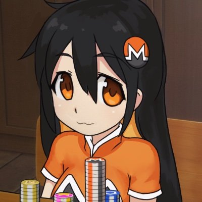

To był ciemny, zimny wieczór, coś wisiało w powietrzu Rzucone "dobry wieczór" do sąsiada na zapleczu Powietrze było pełne dziwnych przeczuć Tych znieczulonych spojrzeń, których dawno nie czuł Godzina czwarta, czwarty lutego, liczył na farta I chuj z tego, ty, gdzieś pod apteką, dzwoni telefon I choć do celu niedaleko, dziś to nie ta karma jego, ciuchy od Armaniego Te typy w garniturach, te ich Barbie w piórach i te ich karki w skórach i koleżanki w furach Widział jak pod Sheraton wjeżdża na parking fura, znał to auto jak te zakamarki w murach Podziurawiona architektura, jak z bajki która uśpiła czujność jak Barbituran Czarny okular, przy tej latarni akurat, skończyć może nawet niezniszczalny o kulach Tu w nieodpowiednim miejscu, o nieodpowiednim czasie Ślepy malarz ciągnie kreskę jakby pędzlem na obrazie Póki na sztaludze płótna jego twarz ma wiele imion Nie mam złudzeń, że od jutra rzeka musi dalej płynąć Obskurna, brudna klatka, lepka posadzka Syn, ojciec Bułgar z dziadka, córka i matka Żółta laurka w rękach pięciolatka, za krótka kurtka, czapka, drzwi czwórka, schodowka klatka Ona jest niby gorsza, on robi za alfonsa Dla osiedlowych żuli liczy się forsa A droga po kolcach nie ma końca Czasem jak przez szyby dworca, tylko wpada promień słońcaopisuje nie osądza, to był jeden z tych dni kiedy odbywają się pogrzeby Słońce wpadło przez rolety, sącząc światło na tapety Jutro cała spłata, kredyt, krata z mety na bankiety On powiedział do niej żeby pracowała dłużej wtedy W ten dzień wreszcie miała szczęście, oby częściej Jeszcze jeden, dobrze, nie ściek z drugim poszła gdzieś w cień toalety Dwóch za dwieście, ruch na mieście, ciemne przejście na śródmieście A na wjeździe rano jeszcze obrys kredy Tu w nieodpowiednim miejscu, o nieodpowiednim czasie Ślepy malarz ciągnie kreskę jakby pędzlem na obrazie Póki na sztaludze płótna jego twarz ma wiele imion Nie mam złudzeń, że od jutra rzeka musi dalej płynąć On miał garnitur od Versace, wyglądał jak Pierce Brosman Jak nic głos miał dzisiaj Rzym, a jutro Moskwa potem Mińsk, Poznań waśnie jej naszyjnik kupił, choć niedawno ją gdzieś poznał chciał poczuć dziś jej posmak, wziął telefon snując plany co odpowie znów pytany król wybranych, lubił zmiany w kurtyzany uwikłany Wybrał numer z książki danych, żona odebrała mówiąc, że kurier z przeprosinami właśnie przyniósł tulipany Była piękna i samotna jak blad fortepianu Postawiła w róg dywanu wazon pełen tulipanów Nieświadoma dokąd niesie prąd szarego oceanu Tu gdzie kwiaty są z hebanu, a owoce są z metalu Drzewa rosną bez konarów, a miłość ma formę żalu Od Meksyku do Nepalu, czas zależy od zegarów Oddanych jest może paru, siano albo szkło ekranu Odebrała ten telefon nalewając wodę z kranu Tu w nieodpowiednim miejscu, o nieodpowiednim czasie Ślepy malarz ciągnie kreskę jakby pędzlem na obrazie Póki na sztaludze płótna jego twarz ma wiele imion Nie mam złudzeń, że od jutra rzeka musi dalej płynąć
yeah, it's another shitpost page
~yxna
inspired by cook.li(spelled differently)
